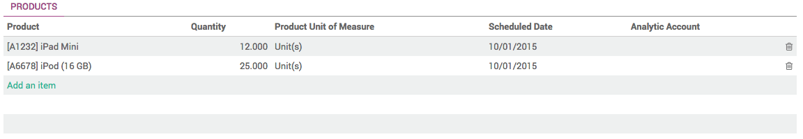

A Purchase Tender (PT), also known as Call for Bids, is used to drive competition between several suppliers in order to get the best offer for a list of products. In comparison to the RfQ, a Purchase Tender is sent to multiple suppliers, stating each are competing with one another, and that the best offer will win. The main interest is that it usually leads to better offers.
For more information on best uses, please read the chapter Request for Quotation, Purchase Tender or Purchase Order?
Configuration
Activating the Purchase Tender function
By default, the Purchase Tender is not activated. To be able to use PTs, you must first activate the option.
In the Purchases module, open the Configuration menu and click on Settings. In the Purchase Order section, locate the Calls for Tenders and tick the box Allow using call for tenders… (advanced), then click on Apply.

Creating a Purchase Tender
To create a new Purchase Tender, open .
In the Purchase Tenders window, click on Create. A new Purchase Tenders window opens.
By default, Odoo names PTs "TEXXXXX" but you can change it as you like.
In the Responsible field, you can select the person who will be in charge of the PT.
In the Tender Selection Type menu, you can decide to:
- select only one RfQ and automatically cancel all other bid: Select only one RFQ (exclusive)
- allow multiple purchase orders for this PT: Select multiple RFQ
Tick in the box Multiple RFQ per vendor if you wish to allow suppliers to send in more than one Request for Quotation.

In the Tender Closing Deadline field, select the date to bids are closed for suppliers.
In the Scheduled Ordering Date field, select the date to which you will place the order.
In the Scheduled Date field, select the date to which the products should be delivered.
In the Source Document field, you can insert a previous PO to use as a template.
In the Products section, click on Add an item.
Select the product in the Product list, then insert Quantity. You can add as many products as you wish.
Click on Save, then on Confirm Call. Two new RFQs/Bids and Request a Quotation tabs have appeared on the right side of the window.
Click on Request a Quotation and type in the names of the suppliers you wish to include in the PT, then click on Create Request for Quotation.

A list of suppliers has appeared in the Requests for Quotation section.

To send the RfQs to your suppliers, click on the green V icon. You can also review the RfQ before sending them by clicking on them.
When you receive offers, click on the RFQs/Bids tab. In the list view, select the company and click on Edit to adapt the details as stated in the offer.

When you have edited all the corresponding fields, click on Save.
When the deadline has been reached, click on Close Call for Tenders. The status of the PT is now Bid Selection. Open the RFQs/Bids tab and open the RfQ(s) you wish to proceed with.
Click on Approve Order to convert the RfQ into a Purchase Order, the go back to your PT and click on Done to close the PT.
View Purchase Tenders in our Online Demonstration